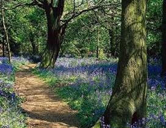

Our Rowing Correspondant, Deepa Nair

On June 26th KALA’s members got up from their couches and packed their bags for a ramble in the Hampshire countryside and a canal boat cruise. There were about fifty of us. Our plan for the morning was to walk around the small, quiet and peaceful village of North Warnborough. We split into three groups, called green group, blue group and red group. Each group took a different route. I was in the green group. We passed different sites such as King John’s Castle. It was used as a hunting lodge. The whole castle was made out of stones and its windows were just holes. The whole castle is 800 years old. We also passed lots of stinging nettles, brown trout, swans and ducks. Not many people saw wild birds but there was lots of them around.
Around 11.45 we came to a farm with a lot of hay. We met together at the woods that was scattered with wild rabbits. Along the way the track was very narrow, sandy and was covered along the sides with wild plants. The place I think was most interesting was a cave that has thousands of bats in it. There is now a gate blocking the whole cave. We passed a farm too. It was full of pigs, we also saw horses and cows. There was a pottery shop full of artistic work.
The canal boat was called John Pinkerton. It was 67 ft long and is able to carry 50 passengers. The boat ride cost £3.50 for adults and £2 for children under 16. We had a variety of home made foods and a bar inside too. We had entertainment after and during lunch by uncle Sukumaran and other talented Kala members. The canal boat cruise took 2 and a half hours. It took us round through beautiful countryside and then returned to the wharf near the car park. The whole cruise was lovely.
My favourite part was being able to climb the stiles. It was a bit tricky at the start but I got used to it. The whole walk was over at 5:00 p.m. The weather was hot in the morning but it then started spitting when we were all going home safely inside the car. It was a successful and brilliant outing thanks to the careful planning done.